Robotics Systems Engineer
Final-year Robotics Engineering student at SIT, with hands-on experience in automation, robotic systems, and production engineering. I build things that work or make them work better.
Work History
Production Engineering Intern
Operations Team
Engineering Intern
What I've Built
A compact motorised robot that assists users in pushing their bicycles up overhead bridge ramps, reducing physical effort without modifying existing infrastructure.
Click to read more →
A Core XY robotic system that autonomously prints custom designs on macarons using the Evebot PrintPen, with IR sensing and servo-driven Z-axis control.
Click to read more →
A collaborative robot system using an OMRON TM-series arm and a custom 4-suction-cup end effector to automate warehouse decanting for a local logistics company.
Click to read more →
Digitalised Shimano's equipment rental and inventory system using Microsoft Power Automate, eliminating manual tracking and achieving over 98% system reliability.
Click to read more →
Redesigned a production machine's spindle riveting head using SolidWorks, improving precision, bearing stability, and ease of maintenance. Final design approved for machining.
Click to read more →
Replaced an unstable 2-finger robotic gripper with a dual-material 3-finger end effector, reducing slippage by 40% and improving pick-and-place accuracy for spool-shell transfer.
Click to read more →
Designed and 3D-printed a multi-stage display case to showcase the pedal cleat manufacturing process, used for operator training and process visualisation on the production line.
Click to read more →
A 24/7 shiny hunting bot for Pokémon FireRed/LeafGreen on Nintendo Switch, using an ESP32-S3 controller emulator and OpenCV computer vision to detect shiny Pokémon automatically.
Click to read more →
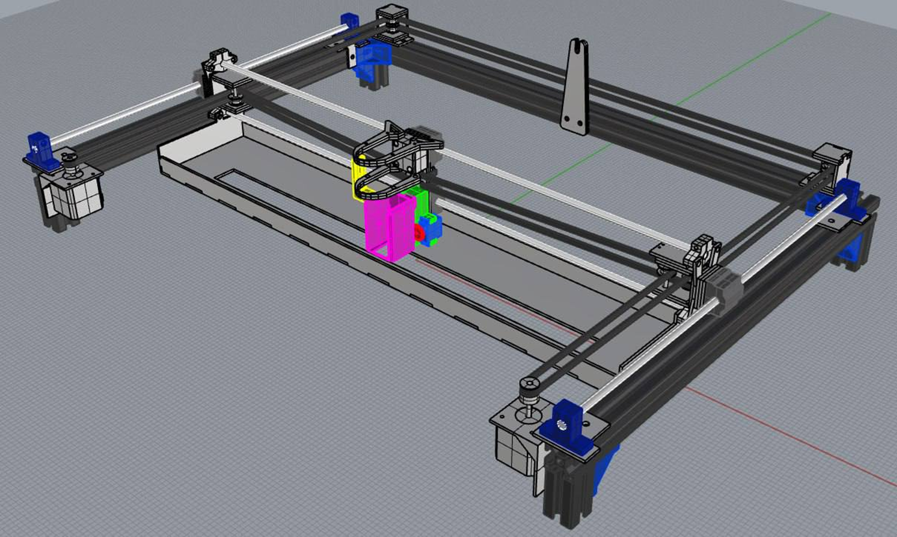
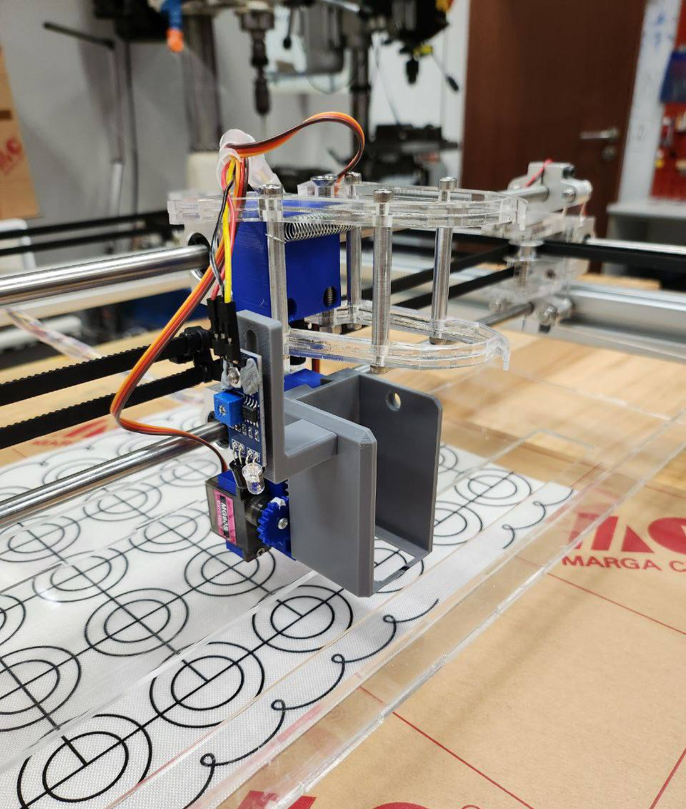
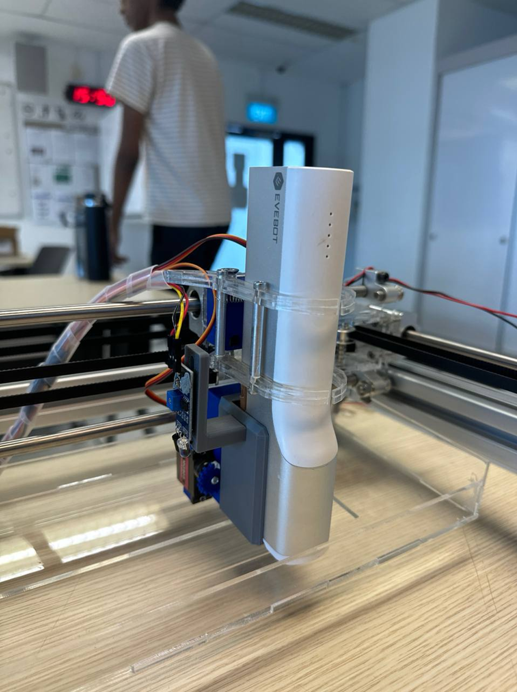
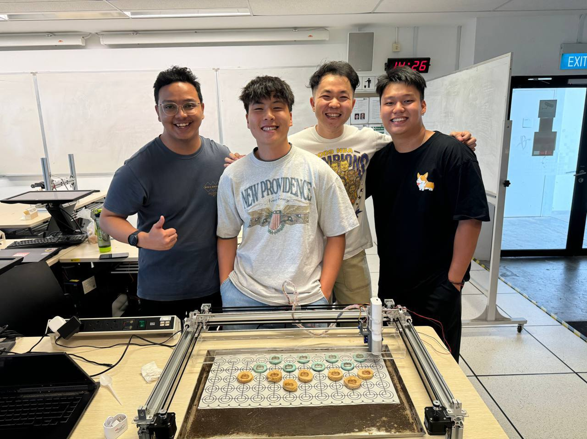
We wanted to take the tedious, manual process of printing designs on macarons and make it fully automated. The goal was to build a system that food caterers could rely on to produce consistent, high-quality prints at scale, faster and without the human error.
Anyone who has done food printing by hand knows how repetitive and inconsistent it gets. We built a prototype that pairs the Evebot PrintPen with a Core XY motion system, so the machine handles the entire printing cycle on its own. It detects each macaron using infrared sensors, moves the print head into position, and adjusts the Z-axis height with a servo motor to make sure every print lands just right.
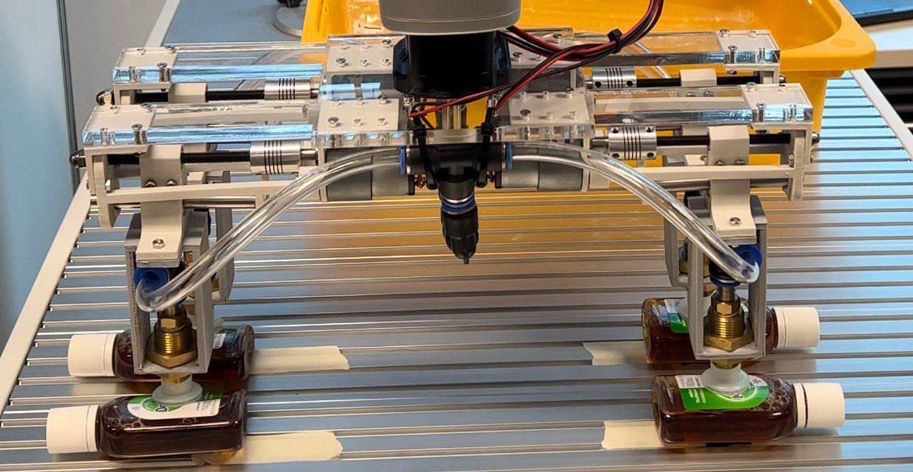
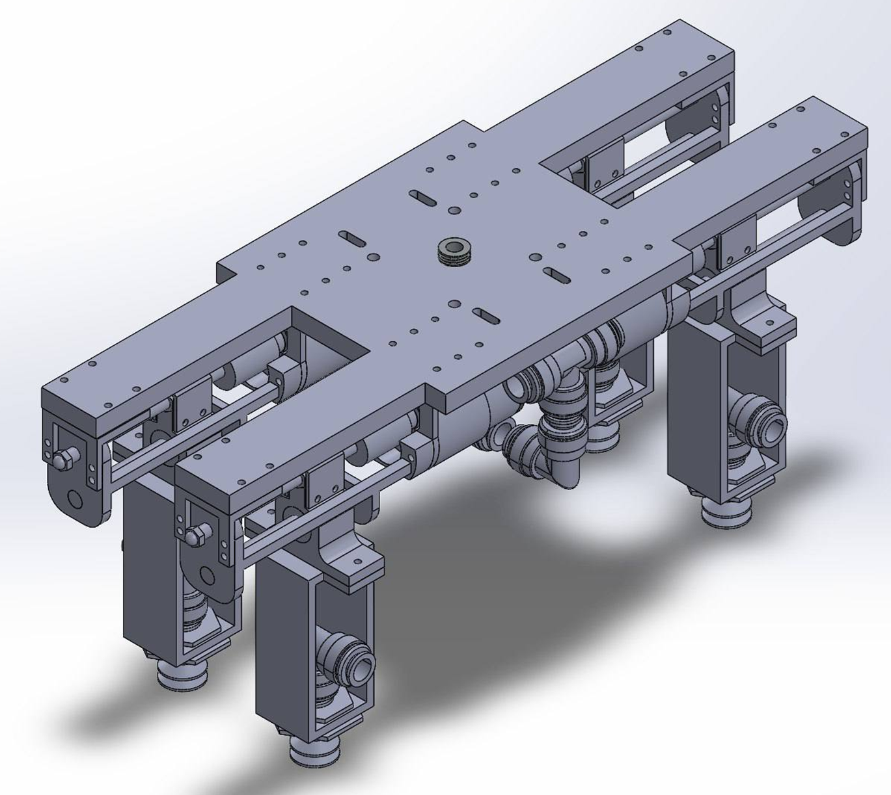
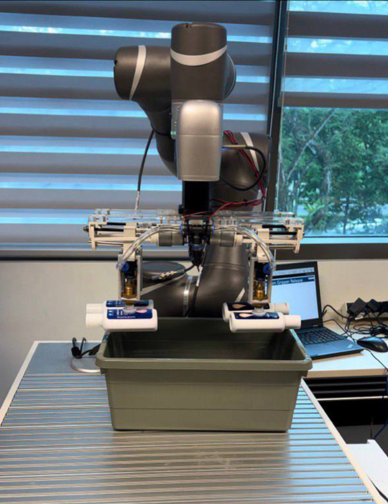
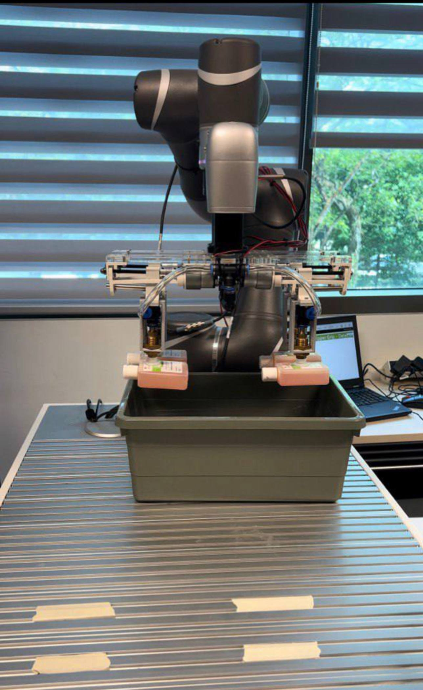
Warehouse decanting is one of those jobs that looks simple but wears people out fast. We set out to automate it for a local logistics company, transferring items from carton boxes into tote boxes using a collaborative robot, so workers could step back from the repetitive heavy lifting and focus on more meaningful tasks.
We built a system around the OMRON TM-series collaborative arm, fitted with a custom 4-suction-cup end effector that can handle multiple SKUs of different shapes and sizes at once. The robot picks up to four items simultaneously and places them accurately into tote boxes on a conveyor. The whole thing runs on a ROS2 control framework integrated with TMFlow, and the modular design means it can be adapted for different item sizes without a complete redesign.
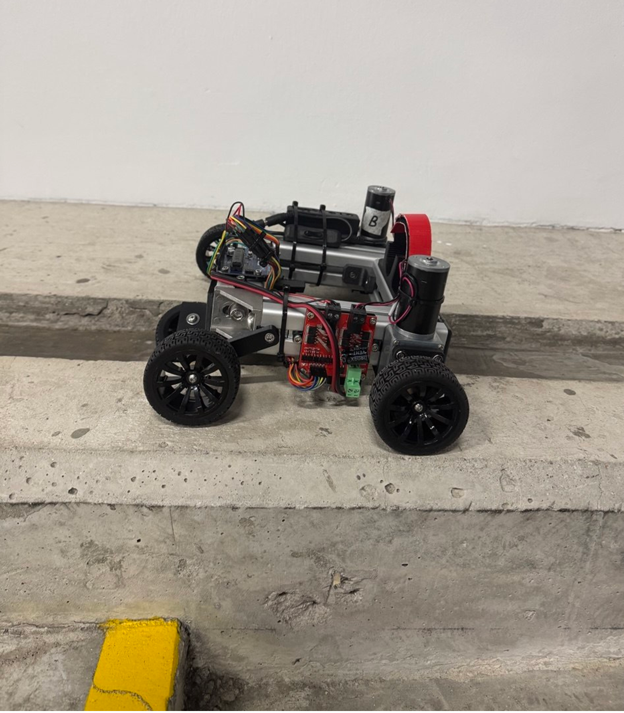
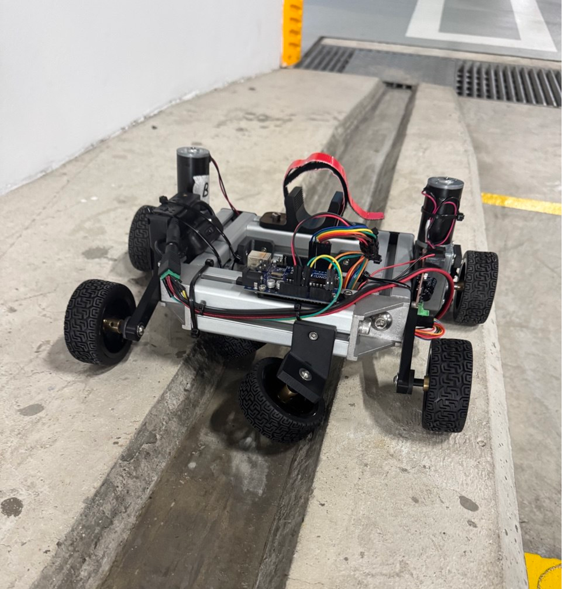
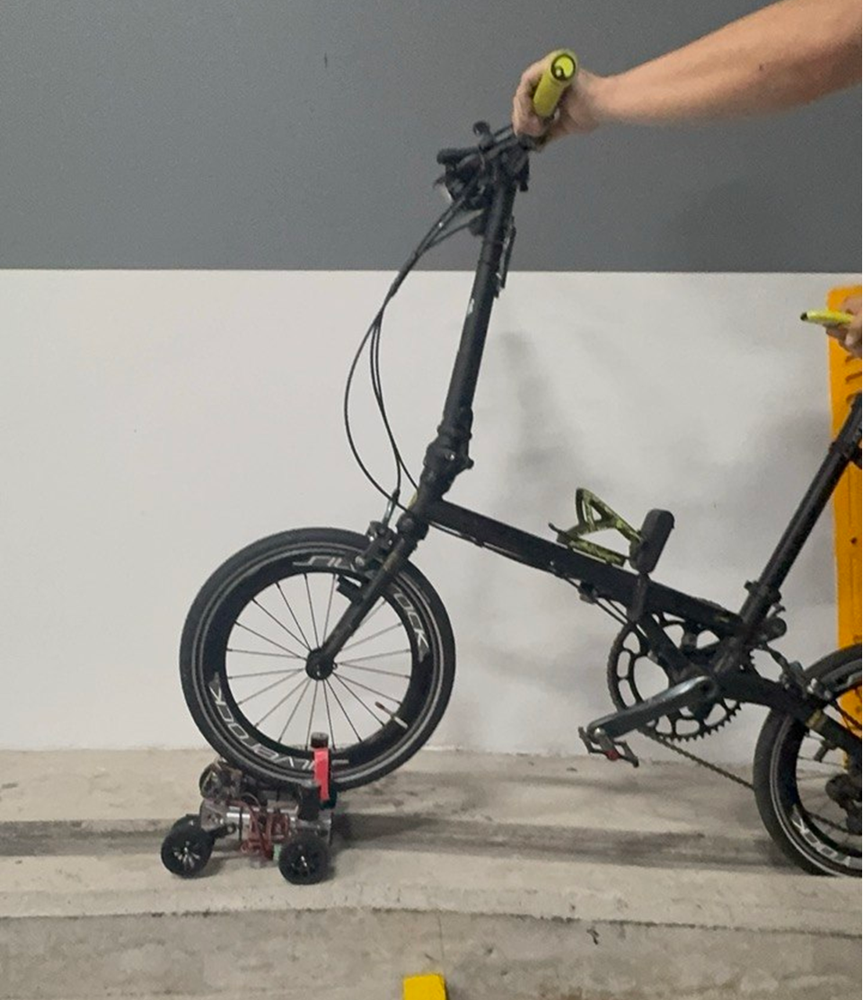
Anyone who has watched an elderly cyclist or a child struggling to push a bicycle up a steep overhead bridge ramp knows it is harder than it looks. BARR was built to fix that. The goal was to design a compact motorised robot that sits in the existing ramp channel and does the pushing for you, without requiring any permanent changes to the ramp itself.
BARR is a four-wheeled robotic assist system built around an aluminium extrusion chassis. Two DC worm-gear motors drive the robot up the ramp while passive guide wheels keep it tracking straight within the channel. A TCS34725 RGB colour sensor detects a red tape marker placed at the top of the ramp and triggers an automatic stop, so the robot always halts at the right position. The user attaches their bicycle's front wheel to BARR via a tyre holder, switches it on, and walks alongside holding the handlebars for lateral stability while BARR does the climbing.
Shimano's equipment rental system ran entirely on manual data entry, which meant booking conflicts were common and tracking was unreliable. The goal was to replace all of that with a fully automated digital system that handled everything from approvals to reminders without anyone needing to chase spreadsheets.
I built an end-to-end automation solution using Microsoft Power Automate as the backbone, connecting Microsoft Forms submissions directly into a live Excel Online database. The system handled the full rental lifecycle automatically — from checking for booking conflicts and routing approval requests, to sending daily reminders, flagging overdue items, and cleaning up expired records every morning. Office Scripts handled the more complex logic like anti-clash date checking and resequencing database entries by start date whenever a record was added or removed.
Scan to view videos and flowcharts of the system
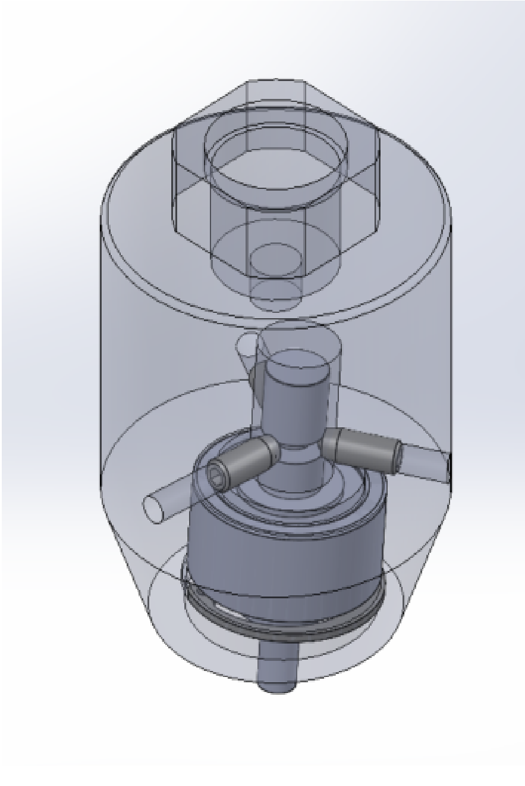
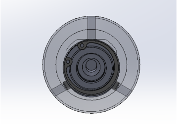
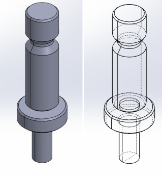
The existing spindle riveting head on Shimano's production machine had limitations in precision and was difficult to maintain. The task was to redesign it from the ground up, creating a mechanism that could produce secure, vibration-resistant joints through rotational riveting rather than impact force, while being easier to service when needed.
I redesigned the spindle riveting head in SolidWorks, focusing on three things: precision, stability, and maintainability. The key design choice was using three spring-loaded ball plungers spaced 120° apart to secure the rod. This arrangement holds everything firmly in place during operation but still allows the rod to be removed easily without tools. A precision ball bearing was integrated for smooth rotational motion, and an external retaining ring keeps the bearing seated securely under axial load.
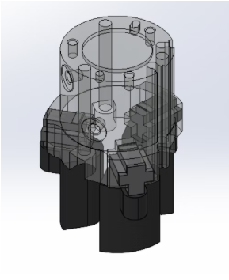
The existing 2-finger gripper used for spool-shell transfer during visual inspection was causing handling errors and grip instability. The task was to replace it with a more balanced 3-finger mechanism that could hold delicate components more reliably without scratching or dropping them.
I designed a new end effector that interfaces with an SMC MHSL3-25D pneumatic actuator. The key innovation was using dual-material 3D printing to combine a rigid structural frame with soft TPU contact surfaces in a single printed part, eliminating the need for screws or separate assembly. This approach gave us both the structural strength needed to handle the load and the compliance needed to grip delicate components without damage. The design went through multiple iterations from v1.1 to v2.2, adjusting infill density, finger length, and material choice to get the balance and grip performance right.
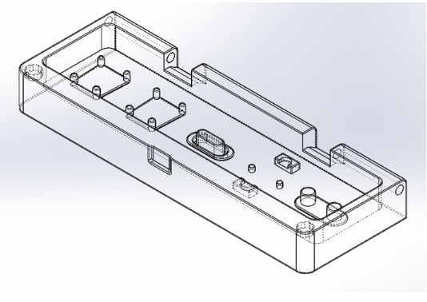
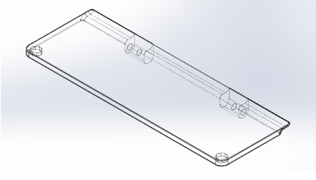
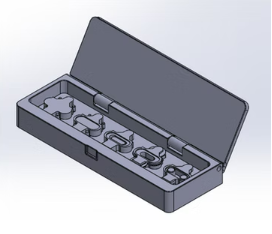
Operators on the production line had no visual reference for understanding the full pedal cleat manufacturing process. I was tasked with designing a professional display case that could walk someone through every stage from raw material to finished product, making it useful for both training and process visualisation on the floor.
I designed and printed a multi-stage display case that holds five distinct manufacturing stages of the pedal cleat, each secured in a custom-fitted jig. The case was designed to look and feel professional, with a magnetic closure system using embedded neodymium magnets and interference-fit dowel pin hinges that open and close smoothly without any visible fasteners. The entire case was produced as a single-piece Onyx print to maximise strength and give it a clean, finished appearance. Each jig went through three iterations to get the fit right for each stage.
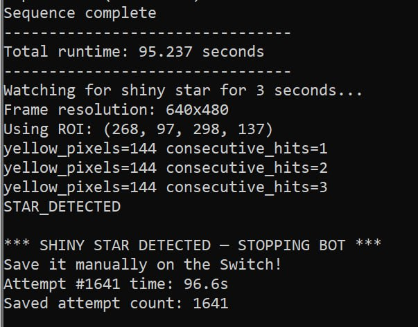
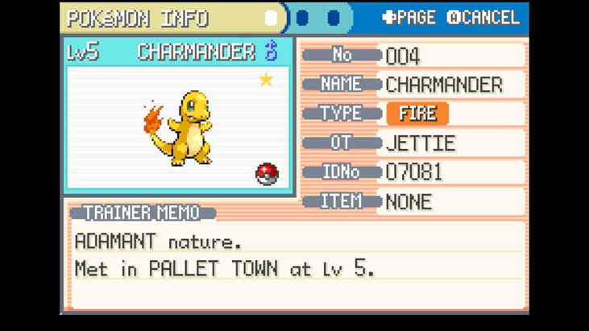
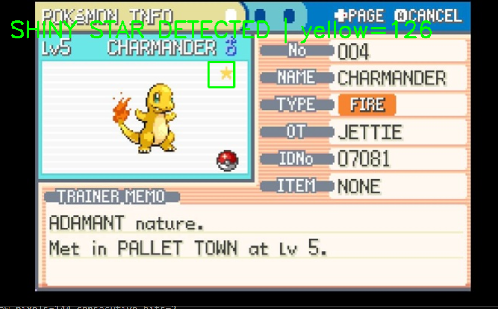
Hunting for a shiny starter Pokémon in FireRed and LeafGreen means soft resetting the game hundreds or even thousands of times, each time manually checking if the Pokémon is shiny. After doing this by hand for a while, I decided to automate the entire process so the bot could run overnight without me touching anything.
The system has two main parts working together. An ESP32-S3 microcontroller is flashed with custom firmware that emulates a Nintendo Switch controller over USB, using a trusted HORI controller VID/PID so the Switch actually recognises it. It connects to the home WiFi network and exposes a REST API, so a Python script on a Windows PC can send button press commands wirelessly over HTTP. The Python script handles all the automation logic, sending button sequences to navigate the game, capturing the Switch screen through OBS Virtual Camera, and using OpenCV to watch for the shiny star indicator on the Pokémon summary screen. When the star is detected across three consecutive frames, the bot stops and beeps to let me know.
Academic Background
Bachelor of Engineering
Robotics Engineering Systems, Honours
Singapore Institute of Technology (SIT)
Aug 2022 — Apr 2026
Diploma in Engineering
Mechatronics
Nanyang Polytechnic (NYP)
Apr 2017 — Apr 2020
Capabilities
Let's Connect
Open to internship and full-time opportunities in robotics and engineering.